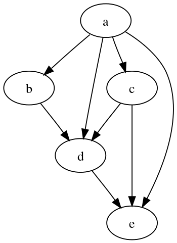

In data science and engineering we tend to think in “DAGs” (directed acyclic graphs), which just means “to make this report, we first have to build this other thing, and to build that thing, we have to run these two queries, and so on. It decomposes the process of building data and artifacts like visualizations or data exports into smaller, individual chunks.

There are a lot of contenders in the market for selling solutions to this exact scenario, and each one solves it a little differently. Right now the hot thing is dbt, but before that we had airflow, dagster, prefect, argo, and a host of others that all were built to operate DAGs at scale on different platforms. For large, mission-critical data pipelines these can provide a lot of value, but the truth is that as data scientists, most of us don’t need something this heavy. Most projects I see really just need some way of defining the links between “scrapbook output”. Maybe it’s a jupyter notebook, or a python script, or some queries that have to happen in a particular order based on an updated warehouse feed.
Moreover, there are some reasons you might not want to try adding an entire workflow management ecosystem into your stack. Maybe:
make was born from a history of compiling C programs on Unix
machines in the 70’s, but it’s completely agnostic to language choice. It’s
job is to translate targets and prerequisites into a DAG,
and incrementally build only the parts it needs to when any of the source
files change. Given that, why would I choose Make over one of the more modern
alternatives?
make report.xlsx
make and python
I’m going to use a distilled example of a recent project I built using just a Makefile, some python, and a little SQL. By the end of this my hope is to show that simple tools can be efficient and reliable, and avoid the overhead of learning, installing, configuring, and inevitably debugging something more complex.2 Ultimately, I wanted to hand this project off in such a way that any of my teammates could maintain it if I was unavailable, so it had to be short, and stick to the tools I know they will always have installed.
Our goal is to produce an Excel file for executive consumption that has a meaningful summary of some data pulled out of our analytics warehouse. Overall, it’ll look a little like this:
base queries --> summary CSVs --> (report.xlsx, diagrams for powerpoint)
The “base” queries might look a lot like temporary tables or common table
expressions (CTEs, or those blocks you see in WITH statements),
but we’ve broken them into several, separate queries. We’re plopping those
summarized results into some flat files so that we can examine the results
with our favorite tools like pandas or awk. We’ll
then take all those flat results and produce deliverables from them, like
charts and an excel file.
myguy is always there for me, so that’s the name of our project,
and its basic structure looks like this:
.
├── config.yml
├── Makefile
├── myguy.py
├── README.md
└── sql
├── this_quarter_sales.sql
├── model_forecast.sql
└── customer_disposition.sql
We will execute each file in the sql/ directory as a query we
execute and then locally cache the results as CSVs. Later we’ll discuss how to
handle the case where all our queries are handled remotely, and don’t create
local files, such as running CREATE TABLE AS (ctas) queries prior
to building the report, but for now we’ll keep it simple: query –> csv on
computer.
Our goal is to make reproducing this report dead simple. I should only have to run this command to rebuild the report at any time:
make report.xlsx
The cookbook that provides this rule is the Makefile.
# Makefile
report.xlsx: myguy.py
python -m myguy build-reportIf this is your first time seeing make, there are a few terms to know:
report.xlsx - this is the target of the rule. It is
the file produced by running make report.xlsx
myguy.py - the prerequisite of
report.xlsx. It has to exist in order to create the excel file.
If this python file’s contents have changed recently, then that’s an
indication that report.xlsx may also change.
python -m myguy build-report - this is the recipe that
Make runs when you issue the command make report.xlsx. I am
invoking python with the -m, or “run module as main” flag in
case we ever refactor our single .py file into a module, like
myguy/__init__.py with its complementary “dunder main”
myguy/__main__.py.
Our main entry point will be in the python module. This will handle the program runtime for executing queries or doing some pandas hackery.
# myguy.py
from pathlib import Path
from time import sleep
import click
import pandas as pd
@click.group()
def cli():
pass
@cli.command()
@click.option(
"-o",
"--output",
help="Write to file",
default=f"{BUILD_DIR}/report.xlsx",
show_default=True,
)
def build_report(output: str):
"""
Generate a new Excel workbook and save it locally.
"""
# Suppose this produces, you know, useful data
pd.DataFrame(dict(a=range(3), b=list("abc"))).to_excel(output, index=False)
sleep(2)
print(f"Saved report to {output}")
if __name__ == "__main__":
cli()
I think click is just great, and provides me with a lot of zen
writing a command line interface (CLI) compared to
argparse, although you could achieve everything I’m doing in this
article equally well with argparse. In this script we create a cli
group because we’ll eventually add more commands to it. The
build_report function just replicates a process that takes a
couple seconds before it outputs a file to build/report.xlsx.
It takes very little code to get a pleasant command line experience with
nested commands. Here’s a quick example of using it after adding another
command called query, which we’ll get to in a moment:
However, if we try building our report right now with
make report.xlsx, we get a
FileNotFoundError: [Errno 2] No such file or directory:
'build/report.xlsx', and that’s because we need to make sure the build directory
exists before running this command. We could handle that in the python with a
few lines, but why not have our dependency management tool, make,
do it for us?
# Makefile
build:
mkdir -p build
report.xlsx: myguy.py | build
python -m myguy build-report
Now our make report.xlsx works just fine, and we get a new
directory build with our empty report in it. Normally we won’t
need the |, but in this case it declares that the
build rule should only be run once, even if we have other targets
with build as a prerequisite.3
If we rerun make report.xlsx, it doesn’t try to create that
directory again, because it already exists.
We do have one other problem though: if we re-run the python code, it will
overwrite our report, even if nothing has changed. Instead, we should get a
message saying make: 'report.xlsx' is up to date. This is
happening because our target is report.xlsx instead of
build/report.xlsx, so make looks in the current
directory, sees that there’s no report.xlsx and therefore runs
the recipe. I don’t want to write make build/report.xlsx, so what
we’ll do is set up make to automatically look in our
build and sql directories for files by setting the
VPATH variable:
# Makefile
BUILDDIR := build
SQLDIR := sql
VPATH := $(SQLDIR):$(TARGETDIR)
$(BUILDDIR):
mkdir -p $(BUILDDIR)
report.xlsx: myguy.py | $(BULDDIR)
python -m myguy build-report
By doing this, we can just issue make report.xlsx instead of
make build/report.xlsx. Setting build to a variable
(referenced via $(BUILDDIR)) allows us to change up the build
directory on a whim, should we need to.
Next, we need to structure the rules that handle our queries, so let’s add a generic method for doing exactly that, given the path to a sql file.
# myguy.py, cont.
from datetime import datetime
# ...other content same as before...
BUILD_DIR = "build"
@cli.command()
@click.argument("path")
def query(path: str):
"""
Issue the query located at `path` to the database, and write the results to
a similarly-named CSV in the `build` directory.
\b
Examples
--------
This command will produce a new file foobar.csv in the `myguy.BUILD_DIR` directory:
$ python -m myguy query sql/foobar.sql
"""
# Hey look, more fake code for an article about querying data
sleep(2)
destination = Path(BUILD_DIR) / Path(path).with_suffix(".csv").name
(
pd.DataFrame(
dict(time_updated=[datetime.now()])
)
.to_csv(destination, index=False)
)
print(f"Finished query for {path} and wrote results to {destination}")
Again, imagine that the “sleep” we’re doing here is some body of actual code
that fetches results from the database. We also don’t need
pandas for something as banal as touching a csv with today’s
date, but it’s there to replicate the very common use case of
pd.read_sql -> to_csv, which is nearly always the most
efficient way to write a program that acquires a database connection, queries
it, and writes the results to a csv for analytics-scale work in python like
this.
We’ve also refactored out the destination build directory into a variable, so
we can have the make script grab that automatically using the
shell built-in:
# Makefile
BUILDDIR := $(shell python -c 'import myguy; print(myguy.BUILD_DIR)')
This technique is also useful for having builds that depend on things like
myguy.__version__, if it exists. With the python in place, we
need to set up our recipes that run the queries. A naive first approach might
look like this:
# Makefile, cont.
# ... same as above ...
this_quarter_sales.csv: this_quarter_sales.sql
python -m myguy query sql/this_quarter_sales.sql
model_forecast.csv: model_forecast.sql
python -m myguy query sql/model_forecast.sql
customer_disposition.csv: customer_disposition.sql
python -m myguy query sql/customer_disposition.sqlThat’s a lot of repetition, so our programmer instincts should kick in here and tell us that “there must be a better way!”4. Make can handle this using implicit rules. We specify a pattern like this, and Make will do all the hard work of connecting the files together:
%.csv: %.sql myguy.py | $(BUILDDIR)
@python -m myguy query $<This takes care of all three rules at once.
% is a wildcard - it matches anything and our rules here
say that “if we’re going to build a .csv, then it has a
similarly-named .sql file as a prerequisite.
@ at the start of the recipe suppresses echoing of the
command when Make runs it
$< is an
automatic variable
that stands for the first prerequisite. In our case, that will be the full
path to the .sql file we are passing into the query function we
previously wrote.
myguy.py is the “source” of the running command, that’s
also a prerequisite
| $(BUILDDIR), as before, says that we have an order-only
prerequisite on the build directory, and our earlier rule will
ensure mkdir build is run before trying to put output there
Now we can issue the same command as our report to build the CSV from each of our queries:
$ make this_quarter_sales.csv
Finished query for sql/this_quarter_sales.sql and wrote results to build/this_quarter_sales.csv
We still need to tie all these together so that I don’t have to run each
command manually - we want to just run make report.xlsx and have
it do all the prerequisite queries for us. To accomplish this, we’re going to
use two more built-ins,
wildcard
and
patsubst
to build the prerequisite and target lists, respectively.
SQLFILES := $(wildcard $(SQLDIR)/*.sql)
TARGETS := $(patsubst $(SQLDIR)/%.sql,%.csv,$(SQLFILES))If we were to echo the contents of these two variables, they would look like this:
# contents of SQLFILES
sql/customer_disposition.sql sql/model_forecast.sql sql/this_quarter_sales.sql
# contents of TARGETS
customer_disposition.csv model_forecast.csv this_quarter_sales.csv
Since our report.xlsx depends on all three of the files in
TARGETS, we bind them together in that rule:
# Makefile
# ... other content same as before ...
report.xlsx: $(TARGETS)
@python -m myguy build-report
Note here that we took out the myguy.py and
$(BUILDDIR) prerequisites from this rule, since those are coming
from our implicit rule on the $(TARGETS). I’m also going to add a
clean rule for trying things over from a fresh start:
clean:
@[ ! -d $(BUILDDIR) ] || rm -r $(BUILDDIR)Decomposing this into English:
@ - don’t echo this command when it runs. Just run it.[ ! -d $(BUILDDIR) ] || - unless the BUILDDIR is missing, do
the next command5
rm -r $(BUILDDIR) - remove the contents of the BUILDDIR
recursively
Here’s where our Makefile is now:
# Makefile
BUILDDIR := $(shell python -c 'import myguy; print(myguy.BUILD_DIR)')
SQLDIR := sql
VPATH := $(SQLDIR):$(TARGETDIR)
SQLFILES := $(wildcard $(SQLDIR)/*.sql)
TARGETS := $(patsubst $(SQLDIR)/%.sql,%.csv,$(SQLFILES))
report.xlsx: $(TARGETS)
@python -m myguy build-report
$(BUILDDIR):
mkdir -p $(BUILDDIR)
%.csv: %.sql myguy.py | $(BUILDDIR)
@python -m myguy query $<
clean:
@[ ! -d $(BUILDDIR) ] || rm -r $(BUILDDIR)So now we can run clean and build the report:
We can do better though. Make has parallelism built in, and most of our
computers have no trouble running things concurrently. By providing the
-j (jobs) flag, we can tell it to do several things at once as
long as they don’t depend on one another. Since our intermediate queries to
CSV fit the bill, they can all run at the same time:
It’s also possible to enable parallelism by default with the
MAKEFLAGS special variable.
# Makefile
MAKEFLAGS := --jobs=$(shell nproc)Let’s suppose we add two more queries, and they need to run before our existing queries, because we did a little refactoring of our SQL.

Moreover, let’s assume that these two new tables are too large to cache locally in a flat file, and we have to issue a CREATE TABLE AS (ctas) statement to build them first. Not every database will permit you to run a CTAS on it, but imagine this is any process that writes data remotely instead of locally, such as spark writing a parquet file on S3, or submitting a POST request to an endpoint we don’t control.
We represent this in Make by first writing out the targets and prerequisites
with different suffixes. For the remote tables, I’ll use the ‘.ctas’ suffix. I
also like to do this in a separate file, dag.mk, so I can hop to
its buffer directly in my editor.
# dag.mk
sales_subset.ctas:
customer_product.ctas:
this_quarter_sales.csv model_forecast.csv: sales_subset.ctas
customer_disposition.csv: customer_product.ctas
This arrangement forces the completion of sales_subset.csv and
customer_product.csv prior to the original three queries. Then in
the main MakeFile, we include these contents above the rules that
handle .csv files, along with a new rule for handling the remote
tables. The %.ctas rule will create an empty target as
soon as the query is done, signaling to make when it last completed
successfully:
# Makefile
# ... other content the same ...
include dag.mk
%.csv: %.sql myguy.py | $(BUILDDIR)
@python -m myguy query $<
%.ctas: %.sql myguy.py | $(BUILDDIR)
@python -m myguy ctas $<
@touch $(BUILDDIR)/$@
Note that this includes a new command for myguy, so let’s add
that too:
# myguy.py
@cli.command()
@click.argument("path")
def ctas(path: str):
"""
Perform a CREATE TABLE AS statement from the SELECT statement in the given
SQL file path.
"""
sql_file = Path(path)
query = f"CREATE TABLE {sql_file.stem} AS {sql_file.read_text()}"
print(query)
sleep(3) # imagine the query is running
And one last thing - our $(TARGETS) assignment has no way of
telling which sql files it should or shouldn’t tie to CSVs. The easiest way to
make this distinction is to actually just remove $(TARGETS) altogether, and
have the dag.mk declare what report.xlsx depends on.
# dag.mk
# ...other contents the same...
report.xlsx: this_quarter_sales.csv \
model_forecast.csv \
customer_disposition.csv# Makefile
report.xlsx:
@python -m myguy build-report
Make will take care of combining these two rules into a single one. If all the
targets are going to have the same suffix, such as .ctas or
.csv, then the trick with $(TARGETS) is handy, but
adds more complexity than it’s worth when mixing target file types.
Altogether, our dag now looks like this:
To round out some of our feature parity with dbt, we need to add templating to our SQL. It’s best if I don’t have to think about how the template is injected, I just want a standard place to put stuff and have the python module take care of it. Let’s introduce a configuration file:
# config.yml
sales_max_date: "2022-03-01"
sales_min_date: "2021-09-01"Presumably, a future analyst will have to come refresh this report for a different set of dates, and we want that configuration readily available to them. The templating engine we’ll use is the same on available on dbt, Jinja2. How we integrate it is by intercepting our python code that reads queries and applying the template from the config there. The jinja2 part is a little verbose, but flexible - anything that’s in our config will be available to the templated SQL:6
# myguy.py
import yaml
import jinja2
# ... other content the same ...
BUILD_DIR = "build"
PROJECT_DIR = Path(__file__).parent
def get_config():
with open(PROJECT_DIR / "config.yml") as f:
config = yaml.safe_load(f)
return config
# The `str | Path` union type hint is python 3.10 syntax, so watch out if you're
# on an older version!
def read_sql_text(path: str | Path) -> str:
"""
Read a SQL file contents and apply jinja templating from this project's
config.yml
"""
config = get_config()
jinja_loader = jinja2.FileSystemLoader(PROJECT_DIR)
jinja_environment = jinja2.Environment(loader=jinja_loader)
template = jinja_environment.get_template(str(path))
sql = template.render(**config)
return sql
And now we use this version of the sql in the ctas and
query functions:
# myguy.py
# ...other content the same ...
def query(path: str):
sql = read_sql_text(path)
destination = Path(BUILD_DIR) / Path(path).with_suffix(".csv").name
# Assuming you have some way of acquiring a database connection
with get_connection() as conn:
pd.read_sql(sql, conn).to_csv(destination)
def ctas(path: str):
path = Path(path)
sql = f"CREATE TABLE `{path.stem}` AS {read_sql_text(path)}"
with get_connection() as conn:
conn.execute(sql)
Within the SQL itself, we can now reference any of the keys in the
config.yml directly:
# sales_subset.sql
SELECT
product_id
, sales_revenue
, sales_units
FROM
fact_sales
WHERE
sales_date BETWEEN date('{{ sales_min_date }}') AND date('{{ sales_max_date }}')
I’m not here to cover everything you can do with jinja and yaml, since those
are already pretty well covered. If you haven’t used it before, it’s worth
looking into. It’s very powerful. The looping and conditional constructs can
make what would normally be pretty tough with just raw SQL easy. When we issue
a make recent_sales.ctas command, it looks like this:
$ make sales_subset.ctas
mkdir -p build
CREATE TABLE `sales_subset` AS SELECT
product_id
, sales_revenue
, sales_units
FROM
fact_sales
WHERE
sales_date BETWEEN date('2021-09-01') AND date('2022-03-01')
There we have it, a simple little dag system for coordinating our project’s
deliverables. For a working example of how to implement this project
structure, check out the
companion repo,
which builds a simple analysis on the
chinook
dataset. This example also includes code that produces .png files
for including into presentations and migrates the mypy.py into a
fully-fledged, pip-installable module.
Except Windows. You’ll need to get it via mingw/cygwin or via the Windows subsystem for Linux.↩︎
I fully acknowledge the irony here that make is, in fact, a
very foreign tool to many data scientists.↩︎
These are called order-only prerequisites↩︎
I’m taking this phrase from Raymond Hettinger, who gives fantastic talks on writing idomatic python. I recommend his beyond PEP8 talk to all levels of developers.↩︎
We do “unless” instead of the more familiar “if” statement, because if
we did this:
[ -d $(BUILDDIR) ] && rm -r $(BUILDDIR) the test
command [ exits with status 1 when the build directory
doesn’t exist, and hence the whole pipe exits status 1. Make treats that
as a failed recipe, which isn’t what we intend. We want it to look like
a success both in the case of removing the directory should it exist,
and doing nothing if it doesn’t.↩︎
You should be extremely careful about templating like this. This article also uses f-strings for injecting arbitrary code into SQL, which is unacceptable if any of your system is public facing. All of these examples are working under the assumption that we’re in a locked-down internal data warehouse, and someone who has access to the system in any way is allowed to issue an arbitrary query.↩︎